As a three-person team, we worked together to create a mobile app, Melody, that aims to create a discussion around the links between music, journaling, and mental health.
People don’t have time to reflect and write in their journals everyday.
Our challenge
How might we help people reflect on their emotions and experiences based on the music they listen to?
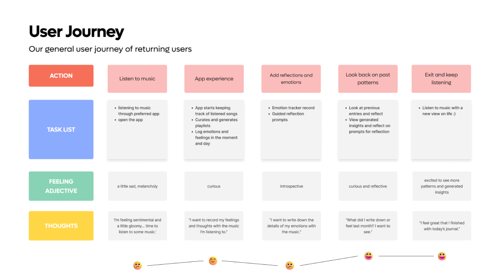
User Journey
We created a user journey in order to map out our user’s goals, motivations, pain points, and behaviors. We decided to focus on the third and fourth touch points, specifically between the acts of adding reflections and looking on past patterns.
Ideation and Iteration
By mapping user flows, we identified key features that would have maximum impact. Additionally, using different methodologies, like Crazy 8s, we ideated different types of products and features to tackle mental health and music journaling.
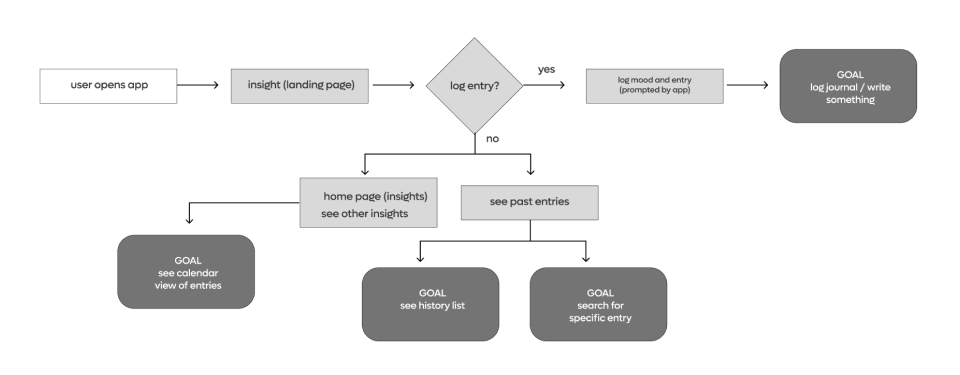
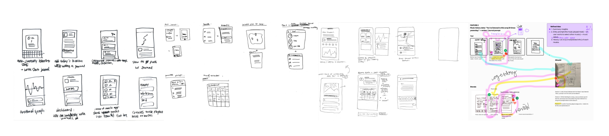
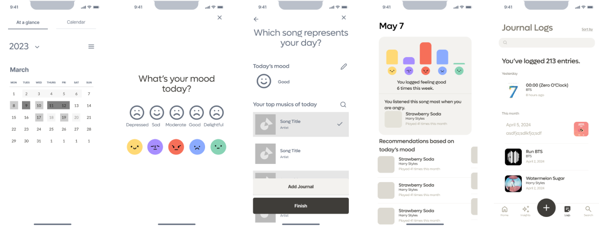
User Testing
While journaling has proven to be a great person with self-care and mental health, we also realize that music listening habits.
Main Features
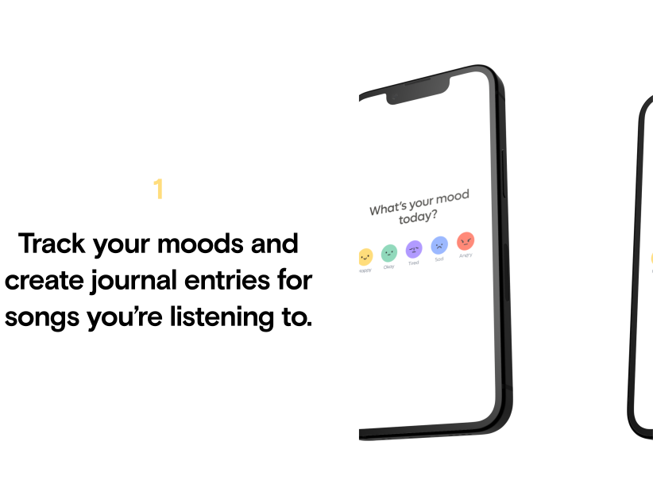
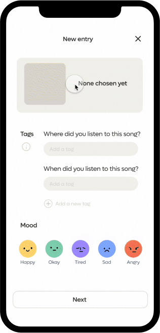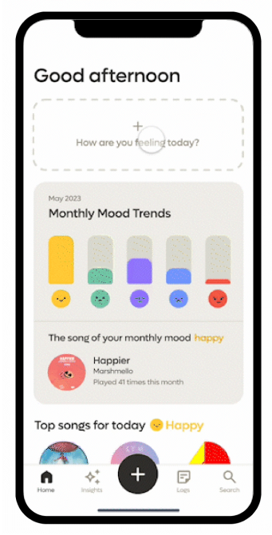
Melody introduces different ways to track your emotional journeys, from simple mood trackers to journals with AI-generated prompts.
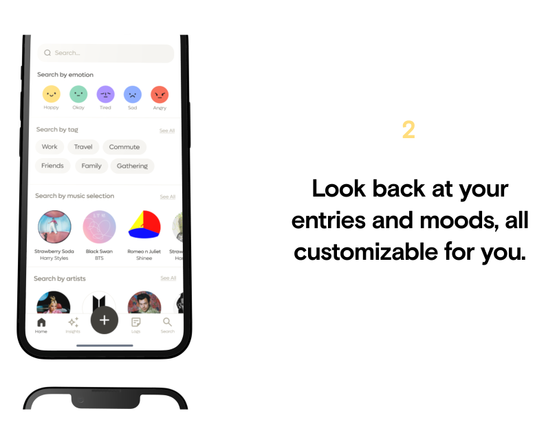
Melody offers different ways to look back at your listening and journaling history.
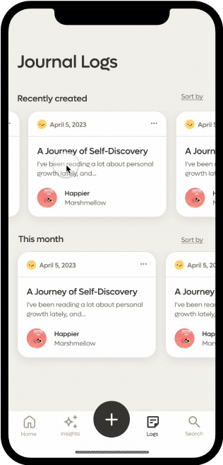
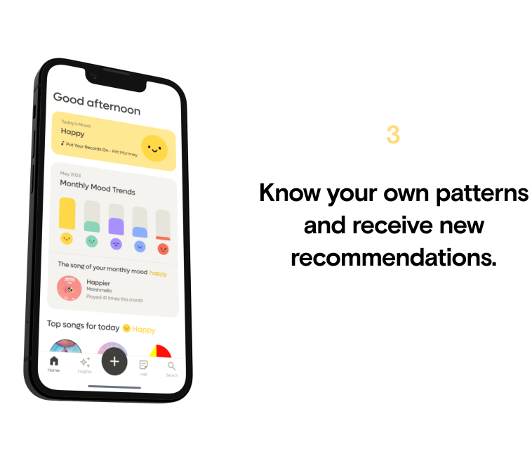
With Melody, you can see your trends and patterns easily through fun visuals, and also receive special recommendations.
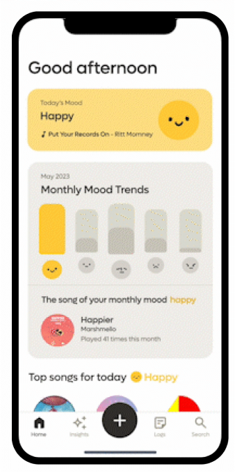
What we found
Although journaling has been demonstrated to be an effective self-care and mental health practice, people's music listening habits also play a significant role in their well-being. By having a better understanding of their listening habits, people can, in turn, have a better relationship with their mental health.
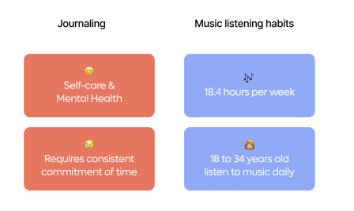
Learnings & Next Steps
Learnings
I really saw the value of iterative design and testing, which allowed us to make improvements on user feedback, especially with things like interactions and information.
There were challenges in designing a product that incorporates both written journaling and music, but we learned how to balance these two features in a way that was intuitive and seamless for the user.
Next Steps
Based on user feedback, I would like to explore additional features and functionality that would enhance the user experience, such as more innovative types of insights and data.
I would also like to consider potential business models for the product, such as offering premium features or partnering with music streaming services to provide users with access to a wider range of personal and streaming information.